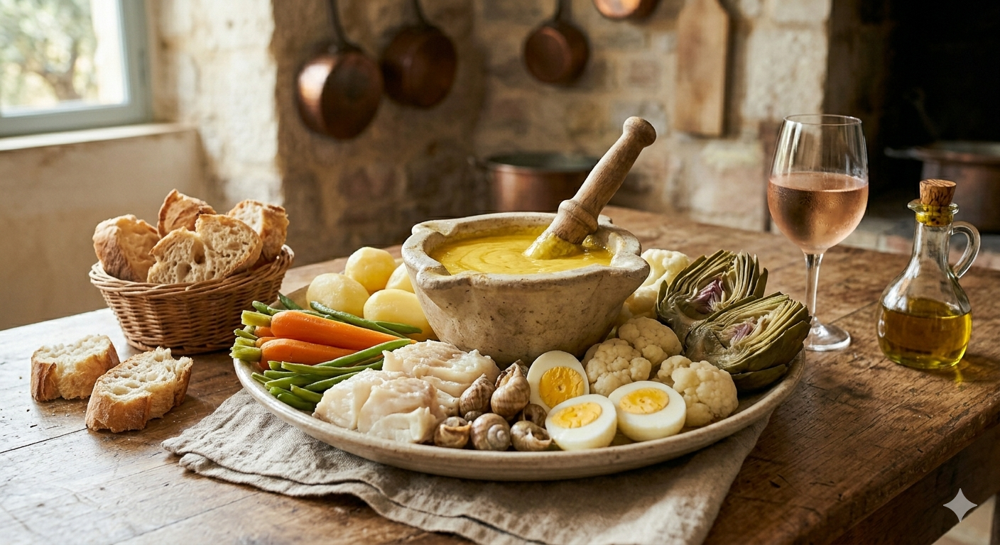

Le Grand Aïoli n'est pas seulement une sauce, c'est le repas complet et convivial du vendredi en Provence. Il réunit autour d'un grand plateau la morue pochée, une multitude de légumes vapeur et, bien sûr, cette émulsion divine à l'ail et à l'huile d'olive.

1. La Sauce (le secret) : Épluchez l'ail, enlevez le germe et pilez-le au mortier avec une pincée de gros sel jusqu'à obtenir une pommade lisse. Ajoutez le jaune d'œuf. Versez l'huile d'olive en filet très mince, très lentement, tout en tournant vigoureusement et toujours dans le même sens avec le pilon. La sauce doit s'épaissir comme une mayonnaise ferme.
2. Le Garni : Cuisez tous les légumes à la vapeur ou à l'eau bouillante salée, en les gardant légèrement fermes. Pointer les pommes de terre. Plongez la morue dessalée dans de l'eau frémissante pendant 8-10 minutes. Dorez les bulots.
3. Le Dressage : Disposez harmonieusement tous les éléments tièdes sur un grand plat rond, avec le mortier d'aïoli au centre. Servez avec du bon pain de campagne.